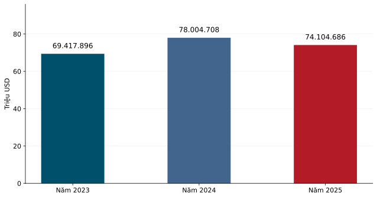
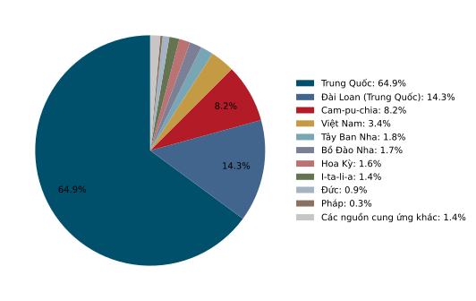
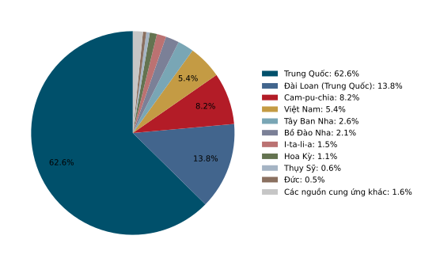
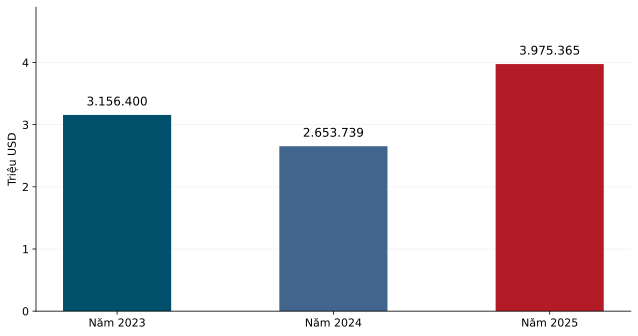
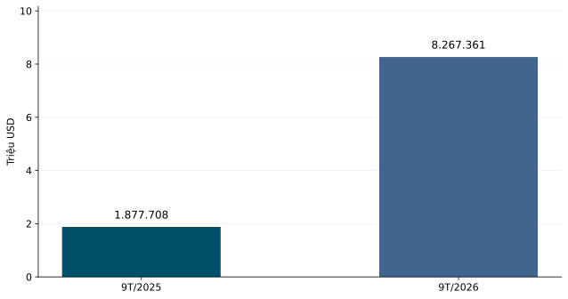

Cục Phòng vệ thương mại tiếp nhận hồ sơ hợp lệ yêu cầu điều tra chống bán phá giá đối với hạt nhựa PET từ Trung Quốc
Ngày 14 tháng 10 năm 2026, Cục Phòng vệ thương mại (Cơ quan điều tra) tiếp nhận hồ sơ của các doanh nghiệp đại diện ngành sản xuất trong nước yêu cầu điều tra áp dụng biện pháp chống bán phá giá đối với sản phẩm hạt nhựa PET có xuất xứ từ Trung Quốc. Ngày 29 tháng 10 năm 2026, Cơ quan điều tra xác nhận hồ sơ đã đầy đủ, hợp lệ theo quy định. Theo Điều 70 Luật Quản lý ngoại thương, trong thời hạn 45 ngày kể từ ngày xác nhận hồ sơ hợp lệ, Cơ quan điều tra sẽ thẩm định tư cách đại diện hợp pháp của ngành sản xuất trong nước và các chứng cứ về hành vi bán phá giá, thiệt hại đáng kể hoặc nguy cơ gây thiệt hại đối với ngành sản xuất trong nước, làm cơ sở trình Bộ trưởng Bộ Công Thương xem xét quyết định tiến hành hoặc không tiến hành điều tra. Để phục vụ quá trình thẩm định và bảo đảm quyền, lợi ích hợp pháp của các bên liên quan, Cục Phòng vệ thương mại đề nghị các doanh nghiệp trong nước sản xuất, kinh doanh hàng hóa tương tự cung cấp thông tin về doanh nghiệp; công suất thiết kế và sản lượng hạt nhựa PET giai đoạn 2022–2026; ý kiến về vụ việc (đồng ý, phản đối hoặc không có ý kiến) và các tài liệu, chứng cứ liên quan khác. Thời hạn cung cấp thông tin là ngày 20 tháng 11 năm 2026.
TIN TRONG NƯỚC
Hoa Kỳ chấm dứt rà soát hành chính lần thứ nhất thuế chống bán phá giá và chống trợ cấp đối với đĩa giấy từ Việt Nam
Ngày 28 tháng 10 năm 2026, Bộ Thương mại Hoa Kỳ (DOC) thông báo chấm dứt rà soát hành chính lần thứ nhất đối với thuế chống bán phá giá và chống trợ cấp áp dụng với đĩa giấy nhập khẩu từ Việt Nam. Trước đó, đầu tháng 8 năm 2026, nguyên đơn là Liên minh Đĩa giấy Hoa Kỳ đã rút toàn bộ yêu cầu rà soát đối với cả hai biện pháp. Do không còn bên nào yêu cầu rà soát, DOC quyết định chấm dứt quá trình này. Việc chấm dứt rà soát không đồng nghĩa với việc hủy bỏ các biện pháp thuế đang áp dụng. Theo đó, mức thuế chống trợ cấp tiếp tục được duy trì ở mức 5,53% đối với doanh nghiệp hợp tác và các doanh nghiệp khác, trong khi doanh nghiệp không hợp tác chịu mức 225,9%. Đối với thuế chống bán phá giá, doanh nghiệp hợp tác được xác định mức thuế 30,42%, sau khi bù trừ khoản trợ cấp xuất khẩu là 24,89%; các doanh nghiệp khác tiếp tục chịu mức thuế 165,27%. Cục Phòng vệ thương mại khuyến nghị các doanh nghiệp sản xuất, xuất khẩu đĩa giấy sang Hoa Kỳ tiếp tục theo dõi diễn biến vụ việc, lưu ý các mức thuế hiện hành và chủ động phối hợp với Cục để cập nhật thông tin, xử lý các vấn đề phát sinh.
TIN TRONG NƯỚC
Hoa Kỳ công bố kết luận cuối cùng rà soát thuế chống bán phá giá đối với tôm nước ấm đông lạnh từ Việt Nam
Ngày 03 tháng 11 năm 2026 (giờ Hoa Kỳ), Bộ Thương mại Hoa Kỳ (DOC) ban hành kết luận cuối cùng rà soát hành chính lần thứ 20 (POR20) thuế chống bán phá giá đối với tôm nước ấm đông lạnh nhập khẩu từ Việt Nam, áp dụng cho giai đoạn từ ngày 01 tháng 02 năm 2024 đến ngày 31 tháng 01 năm 2025. Theo đó, mức thuế áp dụng cho hai doanh nghiệp bị đơn bắt buộc dao động từ 6,36% đến 10,71%; nhóm 27 doanh nghiệp được hưởng thuế suất riêng rẽ chịu mức 7,59%; nhóm 131 doanh nghiệp chịu thuế suất toàn quốc tiếp tục áp dụng mức 25,76%. So với kết luận sơ bộ, thuế suất của hai doanh nghiệp bị đơn bắt buộc và nhóm doanh nghiệp hưởng thuế suất riêng rẽ chỉ thay đổi nhẹ, lần lượt từ 6,30% lên 6,36%, từ 10,76% xuống 10,71% và từ 7,56% lên 7,59%. Mức thuế toàn quốc được giữ nguyên do không có bên liên quan yêu cầu rà soát đối với nhóm doanh nghiệp này. Các điều chỉnh trong kết luận cuối cùng xuất phát từ việc DOC xem xét ý kiến của các bên và điều chỉnh một số nội dung tính toán so với kết luận sơ bộ.
Sau khi kết luận được đăng trên Công báo Liên bang Hoa Kỳ, DOC sẽ hướng dẫn Cơ quan Hải quan và Bảo vệ Biên giới Hoa Kỳ (CBP) xác định, thu thuế đối với các lô hàng thuộc kỳ rà soát; hướng dẫn dự kiến được ban hành không sớm hơn 35 ngày kể từ ngày công bố. Trong thời gian này, các lô hàng nhập khẩu từ Việt Nam tiếp tục phải thực hiện ký quỹ thuế theo mức áp dụng tương ứng với từng doanh nghiệp.
Cục Phòng vệ thương mại khuyến nghị doanh nghiệp xuất khẩu rà soát mức thuế áp dụng, phối hợp với nhà nhập khẩu theo dõi hướng dẫn của DOC và CBP; đồng thời chuẩn hóa, lưu trữ đầy đủ hồ sơ sản xuất, kinh doanh, xuất khẩu, đặc biệt là thông tin về nguyên liệu đầu vào và các yếu tố sản xuất. Doanh nghiệp cần chủ động chuẩn bị cho các kỳ rà soát tiếp theo, phối hợp với Cục và cung cấp thông tin đầy đủ, chính xác, nhất quán, đúng thời hạn theo yêu cầu của DOC nhằm hạn chế nguy cơ bị áp dụng dữ kiện sẵn có bất lợi (AFA).
TIN NƯỚC NGOÀI
Xu hướng gia tăng áp dụng biện pháp tự vệ của WTO
Tại cuộc họp định kỳ ngày 26 tháng 10 năm 2026, Ủy ban Tự vệ thuộc Tổ chức Thương mại thế giới (WTO) đã rà soát các biện pháp tự vệ liên quan đến 39 sản phẩm, trong đó có 11 sản phẩm thuộc nhóm thép và kim loại. Nhiều thành viên bày tỏ quan điểm về các biện pháp của Liên minh châu Âu (EU) và Vương quốc Anh đối với một số sản phẩm thép. Bên cạnh đó, Vương quốc Anh, Nhật Bản, Hàn Quốc và Thổ Nhĩ Kỳ đề cập đến thông tin EU có thể khởi xướng điều tra tự vệ đối với một số loại xe lai điện, đồng thời nhấn mạnh yêu cầu tuân thủ Hiệp định về Tự vệ của WTO.
Ủy ban cũng rà soát các thông báo về biện pháp tự vệ được các thành viên gửi kể từ cuộc họp tháng 4 năm 2026. Có 18 thành viên gửi thông báo, trong đó In-đô-nê-xi-a có 4 thông báo, Ma-đa-ga-xca có 8 thông báo, Ma-rốc có 3 thông báo, Nam Phi có 5 thông báo và Thổ Nhĩ Kỳ có 3 thông báo. Các biện pháp tự vệ của EU đối với thép kỹ thuật điện định hướng hạt và của Vương quốc Anh đối với nhựa polyethylene terephthalate (PET) nhận được nhiều ý kiến trao đổi nhất. Thụy Sĩ và Nhật Bản đồng thời lưu ý số lượng biện pháp tự vệ ngày càng tăng; riêng chương trình nghị sự của cuộc họp có 48 nội dung liên quan đến các biện pháp này, mức cao nhất từ trước đến nay.
Đối với biện pháp của EU sau khi biện pháp tự vệ thép hết hiệu lực vào tháng 7 năm 2026, Nhật Bản và In-đô-nê-xi-a đặt câu hỏi về tính phù hợp với Hiệp định về Tự vệ, trong khi Trung Quốc và Úc cũng bày tỏ quan ngại về mức độ hạn chế thương mại. EU cho rằng biện pháp mới không phải là biện pháp tự vệ. Nhật Bản và Hàn Quốc cũng nêu quan ngại tương tự đối với việc Vương quốc Anh điều chỉnh các cam kết thuế quan đối với thép nhập khẩu sau khi biện pháp tự vệ của nước này hết hiệu lực. Về phía EU, cơ quan này cho biết sẽ thông báo cho Ủy ban nếu khởi xướng điều tra đối với xe lai điện và sẵn sàng giải đáp các vấn đề mà thành viên quan tâm. Bra-xin đề nghị tăng cường tính minh bạch trong thông báo về việc không áp dụng biện pháp tự vệ đối với hàng hóa từ các nước đang phát triển theo Điều 9.1 của Hiệp định về Tự vệ. Cuộc họp tiếp theo dự kiến diễn ra trong tuần từ ngày 26 tháng 4 năm 2027.
Tổng hợp từ Souther Africa’s Freight News
TIN NƯỚC NGOÀI
U-crai-na chậm áp dụng biện pháp chống bán phá giá đối với ống thép nhập khẩu từ Thổ Nhĩ Kỳ
Bộ Kinh tế, Môi trường và Nông nghiệp U-crai-na đang lùi thời điểm ban hành quyết định áp dụng thuế chống bán phá giá (CBPG) chính thức đối với ống thép hàn nhập khẩu từ Thổ Nhĩ Kỳ thêm 2 tuần. Theo ông Oleksandr Kalenkov, Chủ tịch Hiệp hội Ukrmetalurgprom, việc chậm trễ này đang ảnh hưởng đến hoạt động của các doanh nghiệp sản xuất ống thép trong nước. Ông cho biết đã hơn một năm kể từ khi đơn yêu cầu áp dụng biện pháp CBPG được nộp, nhưng đến nay U-crai-na vẫn chưa áp dụng thuế CBPG tạm thời, trong khi 8 doanh nghiệp sản xuất ống thép trong nước đang chịu thiệt hại.
Theo ông Kalenkov, lượng ống thép nhập khẩu từ Thổ Nhĩ Kỳ đã tăng gấp 3 lần kể từ năm 2021 và đang cạnh tranh với sản phẩm nội địa nhờ mức giá thấp hơn chi phí sản xuất của các nhà sản xuất U-crai-na. Áp lực cạnh tranh có thể tiếp tục gia tăng do công suất chưa được khai thác của ngành sản xuất ống thép Thổ Nhĩ Kỳ cao gấp 5 lần nhu cầu tiêu thụ tại U-crai-na, trong khi các thị trường xuất khẩu chủ chốt như Anh, Hoa Kỳ và EU đã áp dụng các biện pháp hạn chế đối với sản phẩm của nước này. Ông cũng lưu ý một số doanh nghiệp sản xuất ống thép Thổ Nhĩ Kỳ mua phôi thép và thép cuộn từ Nga, qua đó đặt ra quan ngại về nguồn gốc nguyên liệu của sản phẩm nhập khẩu.
Đại diện Ukrmetalurgprom cho rằng việc chậm áp dụng biện pháp CBPG khiến các nhà sản xuất trong nước mất đơn hàng, sản lượng và nguồn lực phục hồi. Ông cảnh báo tình trạng này có thể dẫn đến việc nhiều doanh nghiệp phải tạm ngừng hoạt động, ảnh hưởng đến việc làm, nguồn thu ngân sách và nguồn thu ngoại tệ của U-crai-na.
Trước đó, tháng 3 năm 2026, U-crai-na đã khởi xướng điều tra CBPG đối với sản phẩm ống thép hàn không mạ kẽm có xuất xứ từ Thổ Nhĩ Kỳ, trên cơ sở đơn đề nghị của một nhóm nhà sản xuất trong nước, gồm các doanh nghiệp Ilyich Iron and Steel Works of Mariupol, DMZ Kominmet, Trubostal Pipe Plant, Metinvest-SMC và Zaporizhstal. Vụ việc hiện vẫn đang trong quá trình điều tra và chưa có thông tin về quyết định áp dụng biện pháp CBPG chính thức.
Tổng hợp từ Gmk Center
TIN NƯỚC NGOÀI
Hoa Kỳ tiếp tục áp thuế đối với bình chứa thép từ Trung Quốc và điều chỉnh mức thuế chống bán phá giá đối với thép chống ăn mòn từ Mê-hi-cô
Các cơ quan chức năng Hoa Kỳ vừa công bố một số kết quả rà soát liên quan đến các biện pháp phòng vệ thương mại đối với sản phẩm thép nhập khẩu. Theo đó, Hoa Kỳ quyết định tiếp tục duy trì lệnh áp thuế chống bán phá giá (CBPG) và chống trợ cấp (CTC) đối với bình chứa bằng thép không thể nạp lại có xuất xứ từ Trung Quốc, có hiệu lực từ ngày 14 tháng 10 năm 2026. Quyết định này đồng nghĩa với việc các nhà xuất khẩu Trung Quốc tiếp tục chịu các mức thuế hiện hành khi xuất khẩu sản phẩm thuộc phạm vi điều tra sang thị trường Hoa Kỳ.
Đối với sản phẩm thép chống ăn mòn nhập khẩu từ Mê-hi-cô, Hoa Kỳ sửa đổi lệnh áp thuế CBPG, xác định biên độ phá giá ở mức 14,29% và 14,54%. Việc điều chỉnh này có thể ảnh hưởng trực tiếp đến giá xuất khẩu và tiến độ giao hàng của các sản phẩm thép tấm phủ, bao gồm thép mạ kẽm và thép mạ hợp kim nhôm-kẽm, từ Mê-hi-cô vào Hoa Kỳ.
Trong một vụ việc khác, kết quả rà soát cuối kỳ đối với lệnh áp thuế CTC áp dụng với tháp điện gió quy mô công nghiệp nhập khẩu từ Ma-lai-xi-a cho thấy, nếu chấm dứt biện pháp, tình trạng trợ cấp có thể tiếp tục hoặc tái diễn với mức 6,43%. Kết luận này là cơ sở để Hoa Kỳ duy trì biện pháp thuế CTC đối với sản phẩm liên quan.
Các thông tin trên được tổng hợp từ những quyết định của cơ quan chức năng Hoa Kỳ bởi hãng luật Sandler, Travis & Rosenberg, P.A.
Tổng hợp từ News.metal.com
TIN NƯỚC NGOÀI
Thái Lan khởi xướng điều tra chống bán phá giá đối với sản phẩm cáp thép dự ứng lực có xuất xứ từ Trung Quốc
Cuộc điều tra áp dụng đối với các sản phẩm thuộc mã HS 7312.10.91 và chính thức bắt đầu từ ngày 23 tháng 10 năm 2026 vừa qua.
Ủy ban Chống bán phá giá và Trợ cấp đã chấp thuận đơn yêu cầu của công ty SIW vào ngày 30 tháng 9 năm 2026 đại diện cho ngành sản xuất trong nước. Đơn kiện cáo buộc rằng sản phẩm cáp thép dự ứng lực có xuất xứ từ Trung Quốc đang bị bán phá giá tại thị trường Thái Lan với biên độ bán phá giá là 7,83% so với giá CIF.
Bên khiếu nại lập luận rằng khối lượng nhập khẩu tăng vọt cùng với năng lực sản xuất và xuất khẩu được mở rộng đáng kể của các nhà sản xuất Trung Quốc đang đe dọa gây thiệt hại đáng kể cho ngành sản xuất trong nước thông qua việc kéo giảm giá bán tại thị trường nội địa.
SIW là doanh nghiệp thuộc sở hữu hoàn toàn của tập đoàn Tata Steel (Ấn Độ), hiện vận hành 01 nhà máy tại Bankhai, tỉnh Rayong (khu vực duyên hải phía Đông Thái Lan), chuyên sản xuất cáp thép dự ứng lực, dây thép dự ứng lực, lưới thép và dây thép lò xo.
Cục Ngoại thương Thái Lan (DFT) sẽ gửi bảng câu hỏi điều tra đến các bên liên quan. Những bên liên quan chưa nhận được bảng câu hỏi nhưng có nguyện vọng tham gia vụ việc cần gửi yêu cầu bằng văn bản trong vòng 15 ngày kể từ ngày thông báo được ban hành. Ngoài ra, tất cả các bên liên quan có nghĩa vụ gửi các ý kiến bình luận về vụ việc và các tài liệu chứng cứ hỗ trợ trong thời hạn 30 ngày.
Tổng hợp từ mysteel.net
TIN NƯỚC NGOÀI
Úc đề xuất biên độ bán phá giá bằng không đối với nhà sản xuất thép thanh Master Steel của In-đô-nê-xi-a
Ủy ban Biện pháp Phòng vệ thương mại Úc (ATRC) đã đề xuất sửa đổi các biện pháp chống bán phá giá áp dụng đối với mặt hàng thép thanh nhập khẩu từ nhà sản xuất PT The Master Steel Manufactory (Master Steel) của In-đô-nê-xi-a, sau khi tiến hành một đợt rà soát nhanh. Trong báo cáo cuối cùng ngày 1 tháng 10 năm 2026, Ủy ban này đã xác định biên độ bán phá giá đối với doanh nghiệp này là 0% so với mức thuế chống bán phá giá tạm thời là 9,3% hiện đang áp dụng cho tất cả các nhà xuất khẩu khác.
Đợt rà soát nhanh được khởi xướng vào ngày 15 tháng 7 năm 2026, dựa trên đơn yêu cầu điều tra của Master Steel ngày 23 tháng 6. Công ty này đã đề nghị được đánh giá riêng biệt với lập luận rằng mức thuế áp dụng cho các nhà xuất khẩu khác không nên áp dụng đối với các lô hàng của họ. ATRC xác nhận rằng Master Steel đã không xuất khẩu các sản phẩm liên quan sang Úc trong thời kỳ điều tra ban đầu, do đó, công ty này được coi là nhà xuất khẩu mới và đủ điều kiện để thực hiện rà soát nhanh.
ATRC đề xuất cơ chế giá sàn thay cho phương pháp áp thuế hiện hành
ATRC đã rà soát giai đoạn từ ngày 1 tháng 4 năm 2025 đến ngày 31 tháng 3 năm 2026 và nhận thấy rằng trong khoảng thời gian này, Master Steel không xuất khẩu thép thanh sang Úc, mặc dù công ty đã bán các sản phẩm tương đương tại thị trường nội địa In-đô-nê-xi-a. Do không có các giao dịch xuất khẩu sang Úc, ATRC đã xác định giá xuất khẩu bằng với giá trị thông thường (được tính toán dựa trên dữ liệu bán hàng nội địa của công ty), dẫn đến biên độ bán phá giá bằng 0%.
Theo đó, ATRC khuyến nghị cơ chế giá sàn đối với doanh nghiệp này. Theo cơ chế này, thuế chống bán phá giá sẽ chỉ được áp dụng nếu Master Steel xuất khẩu thép thanh sang Úc với mức giá thấp hơn giá trị thông thường đã được xác định. Mức giá sàn này sẽ được quy định bằng đồng Rupiah In-đô-nê-xi-a.
Nếu được sự chấp thuận của Bộ trưởng Bộ Công nghiệp và Đổi mới sáng tạo Úc và Bộ trưởng Bộ Khoa học Úc, các biện pháp sửa đổi này sẽ có hiệu lực hồi tố kể từ ngày 23 tháng 6 năm 2026 - ngày Master Steel nộp đơn yêu cầu điều tra.
Tổng hợp từ steelorbis.com
TIN NƯỚC NGOÀI
EU áp thuế từ 39,8% đến 48,1% đối với sản phẩm vải không dệt có xuất xứ từ Trung Quốc
Ủy ban châu Âu (EC) đã quyết định áp thuế chống bán phá giá chính thức ở mức từ 39,8% đến 48,1% đối với các sản phẩm vải không dệt nhập khẩu từ Trung Quốc trong vòng 05 năm.
EC cho biết kết quả điều tra xác định rằng sản phẩm này đã được nhập khẩu vào Liên minh châu Âu (EU) với giá bán phá giá, gây thiệt hại cho ngành sản xuất của EU.
Trước đó, các mức thuế tạm thời từ 45,6% đến 50% đã được áp dụng kể từ tháng 5 năm 2026.
Ngành sản xuất EU chịu ảnh hưởng bởi tình trạng nhập khẩu bán phá giá này tập trung tại Đức, Ý và Pháp. Thị trường vải không dệt tại EU hiện có giá trị khoảng 200 triệu euro (tương đương 222 triệu USD). Đây là một loại vải không dệt được tạo ra từ các lớp sợi polyester đan kim, có thể được gia cố thêm bằng sợi thủy tinh. Sản phẩm này thường được sử dụng làm lớp nền cho các vật liệu chống thấm, bao gồm cả các ứng dụng cho mái nhà trong lĩnh vực xây dựng.
Tổng hợp từ fibre2fashion.com
THÔNG TIN XUẤT NHẬP KHẨU
Cảnh báo đối với mặt hàng xe đạp trẻ em xuất khẩu vào thị trường Mê-hi-cô
1. Mô tả mặt hàng xe đạp trẻ em
Xe đạp trẻ em (Children’s Bicycles) là phương tiện di chuyển cá nhân được thiết kế và sản xuất dành riêng cho trẻ em, có kích thước, trọng lượng và kết cấu phù hợp với đặc điểm thể chất, độ tuổi và khả năng vận động của trẻ. Sản phẩm thường có cấu tạo gồm khung xe, phuộc trước, ghi đông, yên xe, bàn đạp, bộ truyền động, xích, bánh xe, lốp, vành, hệ thống phanh và các bộ phận phụ trợ khác. Khung xe thường được chế tạo từ các vật liệu như thép, hợp kim nhôm hoặc các vật liệu kim loại có độ bền cao, bảo đảm khả năng chịu lực, độ ổn định và an toàn trong quá trình sử dụng. Xe đạp trẻ em có nhiều kích cỡ bánh xe khác nhau, phổ biến gồm 12 inch, 14 inch, 16 inch, 18 inch và 20 inch, tương ứng với từng nhóm độ tuổi, chiều cao và thể trạng của trẻ. Tùy theo thiết kế và mục đích sử dụng, sản phẩm có thể được trang bị bánh phụ để hỗ trợ trẻ mới tập đi xe, chắn bùn, giỏ đựng đồ, chuông, chân chống, bộ phận bảo vệ xích và các phụ kiện trang trí.
Về kiểu dáng, xe đạp trẻ em rất đa dạng, bao gồm xe đạp thông thường, xe đạp thể thao, xe đạp địa hình dành cho trẻ em và các mẫu xe có thiết kế mô phỏng nhân vật hoạt hình hoặc hình ảnh ngộ nghĩnh nhằm thu hút người sử dụng. Sản phẩm chủ yếu được sử dụng để phục vụ nhu cầu vui chơi, giải trí, rèn luyện thể chất, phát triển khả năng giữ thăng bằng, phối hợp vận động và di chuyển trong phạm vi ngắn của trẻ em. Nhìn chung, xe đạp trẻ em là mặt hàng tiêu dùng có yêu cầu tương đối cao về thiết kế, chất lượng, độ bền và tiêu chuẩn an toàn, đặc biệt đối với hệ thống phanh, kết cấu khung xe, khả năng chịu tải và các chi tiết có thể ảnh hưởng trực tiếp đến sự an toàn của trẻ trong quá trình sử dụng.
1.1. Quy trình sản xuất xe đạp trẻ em
Quy trình sản xuất xe đạp trẻ em bao gồm nhiều công đoạn liên tiếp, từ thiết kế, lựa chọn nguyên vật liệu, gia công các bộ phận, lắp ráp, hoàn thiện bề mặt đến kiểm tra chất lượng và đóng gói thành phẩm. Trước tiên, doanh nghiệp tiến hành thiết kế sản phẩm dựa trên độ tuổi, chiều cao và nhu cầu sử dụng của trẻ em, xác định kích thước khung xe, đường kính bánh xe, chiều cao yên và các thông số kỹ thuật phù hợp. Nguyên vật liệu đầu vào chủ yếu gồm thép, hợp kim nhôm để sản xuất khung và các chi tiết kim loại; cao su để sản xuất lốp, săm xe; nhựa để chế tạo bàn đạp, tay nắm, chắn bùn, giỏ xe và các phụ kiện trang trí.
Tiếp theo, các ống kim loại được cắt, uốn, tạo hình, gia công và hàn thành khung xe theo thiết kế. Các bộ phận khác như phuộc trước, ghi đông, cọc yên, trục bánh xe, đĩa xích và bàn đạp được gia công bằng các phương pháp cắt, dập, đúc, tiện hoặc ép phun nhựa tùy theo vật liệu. Bánh xe được chế tạo thông qua việc gia công vành, lắp nan hoa, đùm bánh, lốp và săm; trong đó lốp cao su được phối trộn nguyên liệu, tạo hình và lưu hóa để đạt độ bền, độ đàn hồi cần thiết. Sau khi hoàn thành gia công, khung xe và các chi tiết kim loại được làm sạch, xử lý chống gỉ, sơn phủ hoặc sơn tĩnh điện nhằm tăng độ bền và tính thẩm mỹ của sản phẩm.
Sau công đoạn xử lý bề mặt, các bộ phận được đưa vào dây chuyền lắp ráp để hoàn thiện xe, bao gồm lắp đặt bánh xe, ghi đông, yên xe, bàn đạp, hệ thống truyền động, xích, phanh và các phụ kiện như bánh phụ, chuông, giỏ xe, chắn bùn. Sản phẩm sau lắp ráp được kiểm tra về kích thước, độ chắc chắn của khung, khả năng chịu lực, độ cân bằng bánh xe, hiệu quả phanh và khả năng vận hành, đồng thời đánh giá các yêu cầu an toàn đối với trẻ em. Cuối cùng, xe đạp được vệ sinh, hoàn thiện, dán nhãn, đóng gói bằng thùng carton hoặc bao bì chuyên dụng và đưa vào kho thành phẩm để tiêu thụ trong nước hoặc xuất khẩu.
Nhìn chung, quy trình sản xuất xe đạp trẻ em là sự kết hợp giữa gia công cơ khí, tạo hình kim loại, ép phun nhựa, sản xuất linh kiện cao su, xử lý bề mặt và lắp ráp hoàn chỉnh. Tùy thuộc vào năng lực sản xuất và mô hình hoạt động, doanh nghiệp có thể tự thực hiện toàn bộ hoặc một số công đoạn, đồng thời nhập khẩu hoặc mua từ nhà cung cấp bên ngoài các linh kiện như lốp, săm, hệ thống phanh, bộ truyền động và phụ kiện để lắp ráp thành sản phẩm hoàn chỉnh.
1.2. Thị trường xe đạp trẻ em của Mê-hi-cô và xu hướng
Thị trường xe đạp trẻ em tại Mê-hi-cô chịu ảnh hưởng bởi nhu cầu tiêu dùng của các hộ gia đình, quy mô dân số trẻ, thu nhập, xu hướng vui chơi ngoài trời và nhu cầu rèn luyện thể chất. Sản phẩm trên thị trường khá đa dạng, bao gồm xe đạp dành cho trẻ mới tập đi, xe đạp có bánh phụ, xe đạp thông thường và xe đạp thể thao dành cho trẻ lớn, với nhiều kích thước, màu sắc, kiểu dáng và mức giá khác nhau. Phân khúc phổ thông có vai trò quan trọng nhờ khả năng tiếp cận nhóm khách hàng rộng, trong khi các sản phẩm có thiết kế bắt mắt, kết cấu chắc chắn, trọng lượng nhẹ và tính năng an toàn ngày càng được người tiêu dùng quan tâm.
Về xu hướng, thị trường được dự báo tiếp tục có sự phân hóa giữa các dòng xe giá rẻ, xe tầm trung và sản phẩm có chất lượng, thiết kế cao cấp hơn. Người tiêu dùng có xu hướng quan tâm nhiều hơn đến độ an toàn, độ bền, trọng lượng xe, khả năng điều chỉnh yên và ghi đông, cũng như các phụ kiện hỗ trợ trẻ mới tập đi. Kênh phân phối cũng có thể mở rộng thông qua thương mại điện tử, siêu thị, cửa hàng đồ thể thao và hệ thống bán lẻ chuyên dụng. Tuy nhiên, doanh nghiệp xuất khẩu cần lưu ý áp lực cạnh tranh về giá từ các nhà cung cấp châu Á và những thay đổi trong chính sách nhập khẩu của Mê-hi-cô. Đặc biệt, xe đạp trẻ em xuất xứ Trung Quốc đã thuộc diện áp dụng biện pháp chống bán phá giá; các văn bản chính thức của Mê-hi-cô ghi nhận mức thuế chống bán phá giá được điều chỉnh sơ bộ lên 57,19 USD/chiếc vào tháng 10/2025, đồng thời cho thấy mặt hàng này chịu những quy định thuế nhập khẩu riêng theo xuất xứ và thời điểm. Vì vậy, doanh nghiệp Việt Nam cần kiểm tra chính sách thuế và biện pháp phòng vệ thương mại đang có hiệu lực tại thời điểm xuất khẩu, bảo đảm đáp ứng quy định về an toàn, ghi nhãn và xuất xứ hàng hóa, đồng thời nâng cao chất lượng và khả năng cạnh tranh của sản phẩm.
2. Tình hình xuất khẩu xe đạp trẻ em từ các nguồn trên thế giới sang thị trường Mê-hi-cô
Năm 2023, tổng kim ngạch xuất khẩu xe đạp trẻ em từ tất cả các nguồn trên thế giới sang Mê-hi-cô đạt 69,4 triệu USD, trong đó Trung Quốc là nhà cung cấp lớn nhất, tiếp theo là các thị trường như Đài Loan (Trung Quốc), Việt Nam, Cam-pu-chia và Tây Ban Nha. Trong năm 2024, kim ngạch xuất khẩu mặt hàng này sang Mê-hi-cô tăng 12,4% so với năm 2023 đạt 78 triệu USD. Năm 2025, kim ngạch xuất khẩu sang Mê-hi-cô lại có sự sụt giảm 5%, đạt 74,1 triệu USD.
Nhìn chung, trong giai đoạn 2023–2025, Mê-hi-cô là một trong những thị trường có nhu cầu nhập khẩu đáng chú ý đối với mặt hàng xe đạp, trong đó xe đạp trẻ em là phân khúc có tiềm năng tiêu thụ nhờ quy mô dân số lớn, nhu cầu mua sắm của các hộ gia đình và xu hướng khuyến khích trẻ em tham gia các hoạt động vui chơi, vận động ngoài trời. Thị trường xe đạp trẻ em Mê-hi-cô chủ yếu được cung cấp thông qua hoạt động nhập khẩu từ các quốc gia có ngành công nghiệp sản xuất xe đạp phát triển, đặc biệt là Trung Quốc, Đài Loan (Trung Quốc), Việt Nam, Campuchia và một số quốc gia châu Á khác. Các sản phẩm nhập khẩu tương đối đa dạng về chủng loại, kích thước, chất liệu, kiểu dáng và phân khúc giá, từ xe đạp trẻ em phổ thông, xe đạp có bánh phụ dành cho trẻ mới tập đi đến các dòng xe đạp thể thao, xe đạp địa hình dành cho trẻ lớn. Trong đó, các sản phẩm có giá bán cạnh tranh, thiết kế bắt mắt, màu sắc đa dạng và đáp ứng các yêu cầu cơ bản về an toàn thường có lợi thế trong hệ thống phân phối bán lẻ và thương mại điện tử tại Mê-hi-cô.
Tổng giá trị xuất khẩu xe đạp trẻ em từ các nguồn trên thế giới sang thị trường Mê-hi-cô từ 2023 đến 2025
Đơn vị: USD

Nguồn: S&P Global
Năm 2024, Trung Quốc là nguồn cung cấp có trị giá xuất khẩu xe đạp trẻ em lớn nhất sang thị trường Mê-hi-cô, đạt 50,6 triệu USD, chiếm 64,9% tổng kim ngạch nhập khẩu sản phẩm cùng loại của Mê-hi-cô. Đài Loan (Trung Quốc) xếp thứ hai với trị giá xuất khẩu đạt 11,2 triệu USD, chiếm 14,3% tổng kim ngạch nhập khẩu sản phẩm cùng loại của Mê-hi-cô. Cam-pu-chia xếp thứ ba với trị giá xuất khẩu đạt 6,4 triệu USD, chiếm 8,2% tổng kim ngạch nhập khẩu sản phẩm cùng loại của Mê-hi-cô. Việt Nam xếp thứ tư với trị giá xuất khẩu đạt 2,7 triệu USD, chiếm 3,4% tổng kim ngạch nhập khẩu sản phẩm cùng loại của Mê-hi-cô. Tây Ban Nha xếp thứ năm với trị giá xuất khẩu đạt 1,4 triệu USD, chiếm 1,8% tổng kim ngạch nhập khẩu sản phẩm cùng loại của Mê-hi-cô. Bồ Đào Nha, Hoa Kỳ và I-ta-li-a lần lượt xếp thứ sáu, thứ bảy và thứ tám với trị giá xuất khẩu đạt 1,3 triệu USD, 1,2 triệu USD và 1,1 triệu USD. Tổng trị giá xuất khẩu xe đạp trẻ em của mười nguồn cung ứng chính sang thị trường Mê-hi-cô đạt 76,9 triệu USD, chiếm 98,6% tổng kim ngạch nhập khẩu sản phẩm cùng loại của Mê-hi-cô. Tổng trị giá xuất khẩu xe đạp trẻ em của các nguồn cung ứng khác đạt 1,1 triệu USD, chiếm 1,4% tổng kim ngạch nhập khẩu sản phẩm cùng loại của Mê-hi-cô.
Năm 2025, Trung Quốc tiếp tục là nguồn cung cấp có trị giá xuất khẩu xe đạp trẻ em lớn nhất sang thị trường Mê-hi-cô, đạt 46,4 triệu USD, chiếm 62,6% tổng kim ngạch nhập khẩu sản phẩm cùng loại của Mê-hi-cô. Đài Loan (Trung Quốc) xếp thứ hai với trị giá xuất khẩu đạt 10,2 triệu USD, chiếm 13,8% tổng kim ngạch nhập khẩu sản phẩm cùng loại của Mê-hi-cô. Cam-pu-chia xếp thứ ba với trị giá xuất khẩu đạt 6,1 triệu USD, chiếm 8,2% tổng kim ngạch nhập khẩu sản phẩm cùng loại của Mê-hi-cô. Việt Nam xếp thứ tư với trị giá xuất khẩu đạt gần 4 triệu USD, chiếm 5,4% tổng kim ngạch nhập khẩu sản phẩm cùng loại của Mê-hi-cô. Tây Ban Nha xếp thứ năm với trị giá xuất khẩu đạt 1,9 triệu USD, chiếm 2,6% tổng kim ngạch nhập khẩu sản phẩm cùng loại của Mê-hi-cô. Bồ Đào Nha, I-ta-li-a và Hoa Kỳ lần lượt xếp thứ sáu, thứ bảy và thứ tám với trị giá xuất khẩu đạt 1,6 triệu USD, 1,1 triệu USD và 836 nghìn USD. Tổng trị giá xuất khẩu xe đạp trẻ em của mười nguồn cung ứng sang thị trường Mê-hi-cô đạt 73 triệu USD, chiếm 98,4% tổng kim ngạch nhập khẩu sản phầm cùng loại của Mê-hi-cô. Tổng trị giá xuất khẩu xe đạp trẻ em của các nguồn cung ứng khác đạt 1,2 triệu USD, chiếm 1,6% tổng kim ngạch nhập khẩu sản phẩm cùng loại của Mê-hi-cô.
Các nguồn cung ứng chính sang thị trường Mê-hi-cô năm 2024 và 2025
Đơn vị: USD
Nguồn cung ứng vào Mê-hi-cô
Trị giá NK năm 2024
Trị giá NK năm 2025
2025 so với 2024
Tỷ trọng năm 2024
Tỷ trọng năm 2025
Trung Quốc
50.640.045
46.424.882
-8,3%
64,9%
62,6%
Đài Loan (Trung Quốc)
11.180.952
10.207.363
-8,7%
14,3%
13,8%
Cam-pu-chia
6.408.090
6.094.245
-4,9%
8,2%
8,2%
Việt Nam
2.653.739
3.975.365
49,8%
3,4%
5,4%
Tây Ban Nha
1.402.871
1.894.654
35,1%
1,8%
2,6%
Bồ Đào Nha
1.325.658
1.588.771
19,8%
1,7%
2,1%
I-ta-li-a
1.091.609
1.098.782
0,7%
1,4%
1,5%
Hoa Kỳ
1.212.308
835.954
-31,0%
1,6%
1,1%
Thụy Sỹ
411.435
N/A
0,0%
0,6%
Đức
734.513
391.895
-46,6%
0,9%
0,5%
Nguồn: S&P Global
Trong 9 tháng năm 2026, tổng kim ngạch nhập khẩu xe đạp trẻ em của Mê-hi-cô giảm 35% so với cùng kỳ năm trước đó, đạt 35,1 triệu USD. Trung Quốc là nguồn cung cấp xe đạp trẻ em lớn nhất sang thị trường Mê-hi-cô, đạt 14,2 triệu USD, chiếm 40,3% tổng kim ngạch nhập khẩu sản phẩm cùng loại của Mê-hi-cô. Việt Nam xếp thứ hai trong số các nguồn cung ứng lớn xe đạp trẻ em sang thị trường Mê-hi-cô với kim ngạch xuất khẩu đạt 8,3 triệu USD, chiếm 23,5% tổng kim ngạch nhập khẩu sản phẩm cùng loại của Mê-hi-cô. Đài Loan (Trung Quốc) xếp thứ ba trong số các nguồn cung ứng lớn xe đạp trẻ em sang thị trường Mê-hi-cô với kim ngạch xuất khẩu đạt 5,4 triệu USD, chiếm 15,5% tổng kim ngạch nhập khẩu sản phẩm cùng loại của Mê-hi-cô. Tây Ban Nha xếp thứ tư trong số các nguồn cung ứng lớn xe đạp trẻ em sang thị trường Mê-hi-cô với kim ngạch xuất khẩu đạt 2 triệu USD, chiếm 5,7% tổng kim ngạch nhập khẩu sản phẩm cùng loại của Mê-hi-cô. Cam-pu-chia xếp thứ năm trong số các nguồn cung ứng lớn xe đạp trẻ em sang thị trường Mê-hi-cô với kim ngạch xuất khẩu đạt 1,6 triệu USD, chiếm 4,6% tổng kim ngạch nhập khẩu sản phẩm cùng loại của Mê-hi-cô. Bồ Đào Nha, I-ta-li-a và Hoa Kỳ lần lượt xếp thứ sáu, thứ bảy và thứ tám với trị giá xuất khẩu đạt 1 triệu USD, 979,5 nghìn USD và 633,8 nghìn USD.
Các nguồn cung ứng chính sang thị trường Mê-hi-cô trong 9 tháng đầu năm 2025 và 2026
Đơn vị: USD
Nguồn cung ứng vào Mê-hi-cô
Trị giá NK 9 tháng/2025
Trị giá NK 9 tháng/2026
9T/2026 so với 9T/2025
Tỷ trọng 2026
Trung Quốc
33.431.718
14.165.120
-57,6%
40,3%
Việt Nam
1.877.708
8.267.361
340,3%
23,5%
Đài Loan (Trung Quốc)
8.373.846
5.443.105
-35,0%
15,5%
Tây Ban Nha
1.422.107
2.009.158
41,3%
5,7%
Cam-pu-chia
5.134.179
1.604.272
-68,8%
4,6%
Bồ Đào Nha
1.289.184
1.047.766
-18,7%
3,0%
I-ta-li-a
645.904
979.521
51,7%
2,8%
Hoa Kỳ
564.850
633.785
12,2%
1,8%
Ấn Độ
111.803
193.377
73,0%
0,6%
In-đô-nê-xi-a
140.089
159.836
14,1%
0,5%
Nguồn: S&P Global
Tỷ trọng các nguồn cung ứng chính xuất khẩu sang Mê-hi-cô năm 2024

Nguồn: S&P Global
Tỷ trọng các nguồn cung ứng chính xuất khẩu sang Mê-hi-cô năm 2025

Nguồn: S&P Global
3. Tình hình xuất khẩu xe đạp trẻ em của Việt Nam sang thị trường Mê-hi-cô
Năm 2023, trị giá xuất khẩu mặt hàng xe đạp trẻ em của Việt Nam sang thị trường Mê-hi-cô đạt 3,2 triệu USD, chiếm 4,5% tổng kim ngạch nhập khẩu mặt hàng xe đạp trẻ em của Mê-hi-cô, Việt Nam xếp thứ ba trong số các nguồn cung ứng lớn xe đạp trẻ em sang thị trường Mê-hi-cô. Năm 2024, trị giá xuất khẩu mặt hàng này của Việt Nam giảm 15,9%, đạt 2,7 triệu USD, chiếm 3,4% tổng kim ngạch nhập khẩu mặt hàng cùng loại của Mê-hi-cô, Việt Nam xếp thứ tư trong số các nguồn cung ứng lớn xe đạp trẻ em sang thị trường Mê-hi-cô. Năm 2025, tổng kim ngạch xuất khẩu mặt hàng xe đạp trẻ em của Việt Nam tăng 49,8% so với năm trước đó, đạt gần 4 triệu USD, chiếm 5,4% tổng kim ngạch nhập khẩu mặt hàng này của Mê-hi-cô, Việt Nam tiếp tục xếp thứ tư trong số các nguồn cung ứng lớn xe đạp trẻ em sang thị trường Mê-hi-cô.
Tổng trị giá xuất khẩu xe đạp trẻ em của Việt Nam sang Mê-hi-cô từ năm 2023 đến 2025
Đơn vị: USD

Nguồn: S&P Global
Trong 9 tháng năm 2025, trị giá xuất khẩu xe đạp trẻ em của Việt Nam sang thị trường Mê-hi-cô đạt 1,9 triệu USD, chiếm 3,5% tổng kim ngạch nhập khẩu sản phẩm cùng loại của Mê-hi-cô, Việt Nam xếp thứ tư trong số các nguồn cung ứng lớn xe đạp trẻ em sang thị trường Mê-hi-cô. Trong 9 tháng năm 2026, trị giá xuất khẩu xe đạp trẻ em của Việt Nam tăng đột biến 340,3% so với cùng kỳ năm trước, đạt 8,3 triệu USD, chiếm 23,5% tổng kim ngạch nhập khẩu sản phẩm cùng loại của Mê-hi-cô, Việt Nam xếp thứ hai trong số các nguồn cung ứng lớn xe đạp trẻ em sang thị trường Mê-hi-cô.
Trị giá xuất khẩu xe đạp trẻ em của Việt Nam sang Mê-hi-cô trong 9 tháng năm 2025 và 2026
Đơn vị: USD

Nguồn: S&P Global
4. Cảnh báo và khuyến nghị
Mê-hi-cô đang áp dụng thuế chống bán phá giá đối với xe đạp trẻ em nhập khẩu từ Trung Quốc.
Với kim ngạch tăng nhanh và tỷ trọng đáng kể, doanh nghiệp xuất khẩu cần lưu ý khả năng Mê-hi-cô khởi xướng điều tra phòng vệ thương mại đối với mặt hàng này của Việt Nam trong thời gian tới.
Do vậy, doanh nghiệp cần chủ động theo dõi và cập nhật thông tin về các biện pháp phòng vệ thương mại tại Mê-hi-cô. Thường xuyên cập nhật các thông báo điều tra, kết luận sơ bộ, kết luận cuối cùng và các quyết định rà soát biện pháp chống bán phá giá đối với mặt hàng xe đạp trẻ em thông qua Bộ Kinh tế Mê-hi-cô, cơ quan phụ trách thực thi các biện pháp phòng vệ thương mại (UPCI), Công báo Liên bang Mê-hi-cô (Diario Oficial de la Federación - DOF) và các kênh thông tin của Cục Phòng vệ thương mại. Đặc biệt, cần theo dõi sát việc thực thi và các thay đổi liên quan đến mức thuế chống bán phá giá đối với xe đạp trẻ em có xuất xứ Trung Quốc, cũng như khả năng mở rộng phạm vi điều tra sang các quốc gia cung cấp khác. Doanh nghiệp nên xây dựng cơ chế cập nhật thông tin định kỳ về kim ngạch nhập khẩu, thị phần, giá xuất khẩu và diễn biến cạnh tranh tại Mê-hi-cô để kịp thời nhận diện các dấu hiệu rủi ro, chủ động điều chỉnh kế hoạch sản xuất và xuất khẩu.
Doanh nghiệp cần kiểm soát chặt chẽ vấn đề xuất xứ hàng hóa và phòng ngừa nguy cơ bị điều tra chống lẩn tránh biện pháp phòng vệ thương mại. Đây là yêu cầu đặc biệt quan trọng đối với các doanh nghiệp sản xuất, xuất khẩu xe đạp trẻ em của Việt Nam trong bối cảnh Trung Quốc đang chịu mức thuế chống bán phá giá cao tại Mê-hi-cô. Doanh nghiệp cần rà soát toàn bộ chuỗi cung ứng nguyên vật liệu, linh kiện và phụ kiện đầu vào, đặc biệt là các bộ phận có nguồn gốc từ Trung Quốc như khung xe, vành xe, lốp, săm, hệ thống phanh, bộ truyền động và các chi tiết kim loại, nhựa. Cần xác định rõ tỷ lệ nguyên liệu có xuất xứ trong nước, tỷ lệ linh kiện nhập khẩu, mức độ gia công và giá trị gia tăng được tạo ra tại Việt Nam. Đồng thời, doanh nghiệp phải lưu trữ đầy đủ hồ sơ nhập khẩu nguyên liệu, hợp đồng mua bán, hóa đơn, chứng từ thanh toán, định mức nguyên vật liệu, quy trình sản xuất, bảng kê chi phí và hồ sơ xuất khẩu để chứng minh hàng hóa thực sự được sản xuất tại Việt Nam. Việc xác định xuất xứ phải căn cứ vào quy tắc xuất xứ áp dụng và mức độ chuyển đổi cơ bản của hàng hóa, không chỉ dựa trên địa điểm lắp ráp hoặc việc thay đổi bao bì, nhãn mác. Doanh nghiệp tuyệt đối không thực hiện hành vi chuyển tải, khai báo sai xuất xứ hoặc hợp thức hóa hàng hóa có nguồn gốc từ Trung Quốc nhằm né tránh thuế phòng vệ thương mại.
Doanh nghiệp cần xây dựng chính sách giá xuất khẩu hợp lý và minh bạch hóa cơ cấu chi phí sản xuất. Xây dựng hệ thống kế toán và quản trị chi phí chi tiết đối với từng dòng xe đạp trẻ em, bao gồm chi phí nguyên vật liệu, linh kiện, nhân công, khấu hao máy móc, chi phí sản xuất chung, chi phí quản lý, vận chuyển và các chi phí liên quan khác. Giá xuất khẩu cần được xác định trên cơ sở các yếu tố chi phí thực tế, điều kiện giao dịch, chất lượng sản phẩm và tình hình cạnh tranh trên thị trường. Doanh nghiệp cần hạn chế tình trạng bán hàng với giá thấp bất thường, giảm giá không có cơ sở thương mại hoặc thực hiện các giao dịch nội bộ thiếu minh bạch giữa các bên có quan hệ liên kết. Đối với các doanh nghiệp xuất khẩu thông qua công ty thương mại hoặc nhà phân phối tại nước thứ ba, cần lưu giữ đầy đủ thông tin về giá bán, chiết khấu, hoa hồng và các khoản điều chỉnh liên quan để bảo đảm khả năng giải trình khi cơ quan điều tra yêu cầu. Việc xây dựng chính sách giá minh bạch không chỉ giúp giảm thiểu rủi ro bị cáo buộc bán phá giá mà còn góp phần nâng cao tính ổn định và bền vững trong hoạt động xuất khẩu.
Doanh nghiệp cần xây dựng cơ sở dữ liệu đầy đủ về tình hình sản xuất, xuất khẩu, doanh thu, sản lượng, công suất thiết kế, công suất thực tế, tồn kho, giá bán trong nước và giá xuất khẩu sang Mê-hi-cô. Các thông tin này cần được cập nhật thường xuyên, thống nhất giữa bộ phận kế toán, sản xuất, xuất nhập khẩu và quản lý doanh nghiệp. Đồng thời, cần phân công đầu mối chuyên trách theo dõi các vấn đề phòng vệ thương mại, có khả năng phối hợp với cơ quan quản lý nhà nước, hiệp hội ngành hàng và đơn vị tư vấn pháp lý khi phát sinh vụ việc. Trong trường hợp bị Mê-hi-cô khởi xướng điều tra chống bán phá giá hoặc chống trợ cấp, doanh nghiệp cần nhanh chóng nghiên cứu nội dung thông báo, xác định phạm vi sản phẩm bị điều tra, thời kỳ điều tra và các thời hạn trả lời bảng câu hỏi. Doanh nghiệp cần hợp tác đầy đủ, trung thực và đúng thời hạn với cơ quan điều tra; chuẩn bị hồ sơ chứng minh chi phí sản xuất, giá xuất khẩu, tình hình kinh doanh và các khoản hỗ trợ của Chính phủ đã nhận. Việc không tham gia hoặc cung cấp thông tin không đầy đủ, thiếu nhất quán có thể khiến cơ quan điều tra sử dụng các dữ kiện sẵn có, dẫn đến nguy cơ bị áp dụng mức thuế bất lợi.
Doanh nghiệp cần chủ động trao đổi thông tin với Cục Phòng vệ thương mại và các hiệp hội liên quan để được hỗ trợ nhận diện nguy cơ, cập nhật chính sách thương mại của Mê-hi-cô và hướng dẫn xử lý khi phát sinh vụ việc. Khi xuất hiện dấu hiệu điều tra hoặc kiến nghị áp dụng biện pháp phòng vệ thương mại, doanh nghiệp cần kịp thời thông báo cho cơ quan quản lý để phối hợp đánh giá tác động, xây dựng phương án ứng phó và bảo vệ quyền lợi hợp pháp. Bên cạnh đó, các doanh nghiệp cùng ngành cần tăng cường chia sẻ thông tin về tình hình xuất khẩu, giá bán, nguồn cung nguyên liệu và những thay đổi trong chính sách nhập khẩu của Mê-hi-cô. Sự phối hợp giữa doanh nghiệp, hiệp hội và cơ quan quản lý nhà nước sẽ giúp nâng cao khả năng nhận diện sớm rủi ro, hạn chế tình trạng bị động khi cơ quan điều tra nước nhập khẩu tiến hành thu thập thông tin hoặc khởi xướng vụ việc.
Nâng cao năng lực cạnh tranh và đa dạng hóa thị trường xuất khẩu. Bên cạnh việc kiểm soát rủi ro phòng vệ thương mại, doanh nghiệp cần chú trọng nâng cao chất lượng sản phẩm, cải tiến công nghệ sản xuất, tối ưu hóa chi phí và đa dạng hóa mẫu mã xe đạp trẻ em. Đặc biệt, cần quan tâm đến các yêu cầu về độ an toàn, độ bền, khả năng chịu lực, chất lượng hệ thống phanh, vật liệu sử dụng và quy định ghi nhãn đối với sản phẩm dành cho trẻ em tại Mê-hi-cô. Doanh nghiệp có thể nghiên cứu phát triển các dòng xe có trọng lượng nhẹ, khung hợp kim nhôm, thiết kế phù hợp với từng nhóm tuổi, tích hợp các phụ kiện an toàn và có tính thẩm mỹ cao để nâng cao giá trị sản phẩm, giảm phụ thuộc vào cạnh tranh bằng giá. Đồng thời, cần mở rộng quan hệ với các nhà nhập khẩu, hệ thống bán lẻ và nhà phân phối tại Mê-hi-cô, tăng cường hoạt động xúc tiến thương mại và nghiên cứu khả năng tiếp cận các thị trường khác trong khu vực Mỹ Latinh. Việc đa dạng hóa thị trường sẽ giúp doanh nghiệp giảm sự phụ thuộc vào một thị trường xuất khẩu, hạn chế tác động khi Mê-hi-cô thay đổi chính sách thương mại hoặc áp dụng các biện pháp phòng vệ thương mại.
 BỘ CÔNG THƯƠNG
BỘ CÔNG THƯƠNG